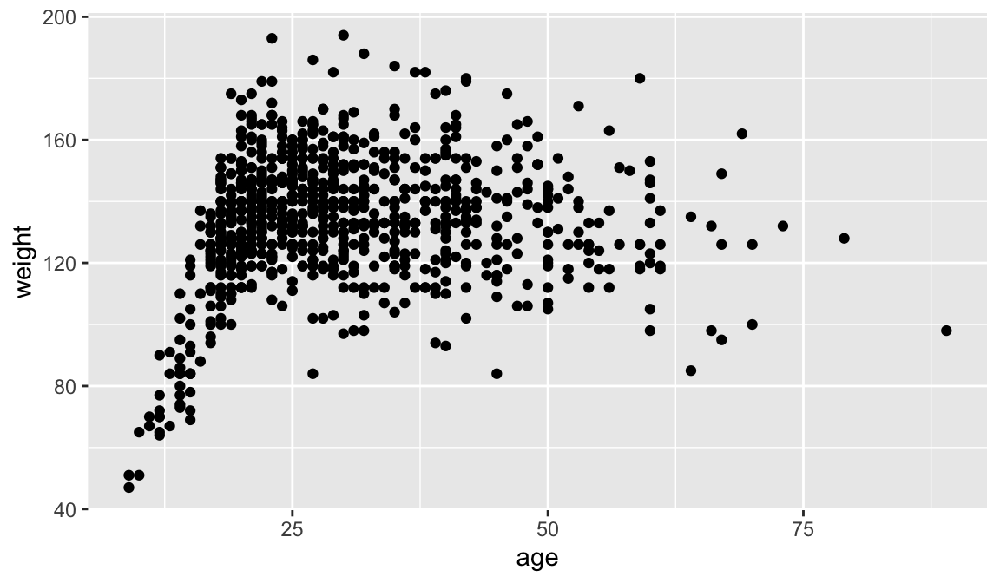

Writing history in Quarto
Being familiar with R and RStudio makes it easy to integrate prose and the results of computational analysis (tables, visualisation, etc.) using Quarto.1 Quarto allows creating fully reproducible documents that can then easily be exported into different formats (Word, PDF, etc.). As well as regular documents, Quarto can create presentations, books, websites, blogposts, interactive visualisations and web applications.
The following seeks to provide a short introduction, especially aimed at historians, covering the basics.2
Getting started
Quarto documents have the extension .qmd and can be opened as a new file using the menu or its corresponding icon. You will be prompted to a new window where you can define the title (and the author), as well as specify to which format you will want the document to be rendered. Let’s just click “Create”: a new Quarto file will be added as a new tab, named “Untitled1”.
The new file, the source document, is actually not totally blank. The top part will look like this:
---
title: "Untitled"
format: html
---The section enclosed between three dashes (---) is called the YAML header and defines how the final document will look like. Given that in the previous pop-up window, we didn’t specify a title, the option title says “Untitled”. If we had indicated a title, it would appear here. The previous pop-up window also had “html” selected as the recommended format, so the YAML header also specifies this will the format to which the document will be rendered to. As we will discover later, there are many more features that can be explicitly set up in the YAML. For now, we will accept what is defined by default.
The text of the document itself is defined after the second set of three dashes (---) and is populated with different things that act as a sort of template that the reader can follow to get her started. For instance, different sub-sections are created using ## and some text is set to be printed in bold by enclosing it between double asterisks. It also includes two examples of code blocks, one of them including an option to hide the code in the rendered version of the document.
Rendering
Rendering involves taking the information contained in the source document and export it into a different format (i.e. html, pdf, etc.), as specified in the YAML. The code embedded in the code blocks is also executed, so the output also forms part of the final document. As mentioned above, you can actually decide whether to include the code and/or the output for each code chunk separately. Note also that rendering creates new file(s) that will be stored in the root folder.3
To see how it works, click the Render button in RStudio. Quarto will generate a new file containing what is in the .qmd file. Given that format: html, a html file will be created in your own server. The title (“Untitled”) will appear at the top of the rendered document and what is typed after the YAML header will follow a bit below. Take a moment to inspect it and compare it with the source document.
You can create documents in other formats just by setting format to pdf (PDF) or docx (Word) in the YAML. Note however that creating PDFs requires LaTeX, which needs to be installed. In order to do so, type the following command in the Terminal window:
Terminal
quarto install tinytexFeel free now to change the format in the yaml to pdf and create one yourself.
Code chunks
One of the biggest advantages of using Quarto documents is that it supports executable code blocks, so you can embed code and output and create fully reproducible documents (the code required to produce the output is part of the document itself).4 R code chunks are identified with ```{r} and can be introduced manually or using the appropriate icon. Do not forget to close it using three backticks ```.
```{r}
library(tidyverse)
library(readxl)
data <- read_excel("data/paisley-data.xlsx")
data |> count(sex)
```Code blocks will be executed by Quarto when rendering. However, you can independently run the code without the need for rendering the whole document. You can therefore interactively check if the code works and tinker with it at will until you are satisfied. In order to do so, click the  icon or keyboard shortcut (⇧⌘⏎). RStudio will execute the code and display the results.
icon or keyboard shortcut (⇧⌘⏎). RStudio will execute the code and display the results.
By default, both the code and its output are displayed in the resulting document. It is however possible to hide the code and/or the subsequent results for each code chunk separately. This is done by including different chunk options after they symbol #| at the top of the chunk: while echo: false will hide the code, results: false will suppress the output. Similarly, you can hide other warnings and messages that sometimes pop up when running your code.
```{r}
#| echo: false
#| results: false
#| warning: false
#| message: false
CODE HERE
```As illustrated in the code block below, you can also provide titles (captions) for the tables or visualisations that the code produces, as well as labelling them. The latter allows cross referencing them within the text itself. Typed in the text itself, the following, for instance, would refer to the table created below: As shown in @tbl-freq-sex, blablabla.. By automatically numbering and providing hyperlinks to figures, tables, and so on, cross-referencing helps structuring and navigating your document. Note that the label must uniquely identify the entity (which also needs a caption). Similarly, the options fig-width and fig-height define the size of the graph, wich is set to by default. There are many different chunk options depending on what you want to do: check here, for instance, if you want to include multiple figures simultaneously.
```{r}
#| warning: false
#| label: fig-scatterplot
#| fig-cap: "Age and weight in the Paisley data set."
#| fig-width: 6
#| fig-height: 3.5
data |>
ggplot(aes(x = age, y = weight)) +
geom_point()
```Inline code
Sometimes, you will want to include executable expressions within the text itself. The code should be enclosed within `{r} `. For example, you can write the following when reporting how many prisoners the Paisley data contains.
There are `{r} nrow(data)` prisoners in the Paisley data.The rendered document won’t show the expression inside the backticks above but the actual number of observations. You can write the actual number yourself but this may come in handy when you are playing around with different data sets (or samples) simultaneously.
For more complex expressions, it is possible to have hidden code chunks (echo: false) that assign the results to an object, so it can be called using inline code. See below for a different way of doing what we did above, plus reporting the average age for male and female prisoners.5
obs <- data |> nrow()
avg_age_male <- data |> filter(sex=="male") |>
summarise(mean = mean(age, na.rm = TRUE)) |> pull(mean) |> round(1)
avg_age_female <- data |> filter(sex=="female") |>
summarise(mean = mean(age, na.rm = TRUE)) |> pull(mean) |> round(1)There are `{r} obs` prisoners in the Paisley data. The average age is `{r} avg_age_male` and `{r} avg_age_female` for men and women, respectively. YAML
As mentioned above, the section enclosed between three dashes (---) is called the YAML header and serves to configure how the source document is processed and how the final document will look like.
---
title: "Computational history"
author: "John Smith"
format: html
---As well as specifying title (and the author) of the document, the YAML defines the format to which the document will be rendered to. There are however many other features that can be configured through the YAML that shape the way the document is rendered. They basically constitute a set of instructions that indicate Quarto how to process and present the document. Most of them are pre-defined by default but you can explicitly define them to fit your needs. Let’s review them.
Firstly, format denotes the type of document that will be created. The different available options for the YAML fields are slightly different depending on whether you are creating HTML, PDF or MS Word documents. Below you can find two examples for html and pdf.
The yaml also allows controlling other features like font type and size. Crucially, you can also indicate that you want to hide all code chunks from the rendered document within execute, (this option can be overturned in each individual code block though by setting echo: true there).
---
title: "Computational history. Session 1"
author: "John Smith"
format: pdf
execute:
echo: false
---It is also possible to automatically add a table of contents and/or section numbering to better structure the document.
---
title: "Computational history"
format:
pdf:
fontsize: 11
toc: true
number-sections: true
bibliography: refs.bib
------
title: "Computational history"
format:
html:
theme: cosmo
code-fold: true # adds a code fold button
code-copy: true # adds a copy button to code blocks
toc: true
number-sections: true
bibliography: refs.bib
---Project-level YAML
For simple documents, it is not necessary to have a .yml file. Having a YAML header, demarcated by three dashes --- at the top of the document, will suffice.
---
title: "Computational history. Session 1"
format: pdf
---We rely on YAML headers for now and move on to YAML pages later on.
Depending on whether you are creating PDFs or HTMLs, the range of yaml options are slightly different.
---
title: "Computational history. Session 1"
format:
pdf:
geometry:
- top=30mm
- left=30mm
------
title: "Computational history. Session 1"
format:
html:
code-fold: true
---Referencing
Quarto relies on .bib files to be able to cross reference citations and create a reference list. .bib
Programmes like Zotero or help creating this type of .bib documents. You can also manually add references to the .bib document. Note that .bib documents can be reused and their contents copied and pasted into other documents. Having them will therefore save you tons of time when creating your reference lists in the future.
You can call this file references.bib (or refs.bib). You will need to specifically indicate in the YAML that your bibliography is stored in that document:
---
title: "Computational history"
format: pdf
bibliography: refs.bib
---You can then easily cite those references in the text using the @citeid syntax. There are different ways of citing. See the differences below
As @beltran2025 [p. 10] argues blablabla.Computational methods are crucial for historians [@beltran2025, p. 10].All items refer to in the text will be compiled into the reference list, which will be automatically added at the end of the document. If you want to add a section title, you can do the following at the end of your .qmd file:
# References {.unnumbered}
::: {#refs}
:::This will suffice for our purposes. This is in any case just a taste. There in anIf you want to learn more and discover all the different possibilities, check the program documentation. It should nonetheless be stressed that RStudio allows seeing the document in “source” or “visual” mode. The latter gives you a sense of how the source document will look like when rendered. It also allows using toolbars for formatting (similar to a Word document). The underlying plain text source code will be written for you, so it might be a way to learn how to use it. You can switch between the two modes at your wish.
Footnotes
Quarto is an open-source publishing system built on Pandoc and authored using Markdown.]↩︎
As well as this Quarto tutorial itself, you can check (hadley2023?, ch. 28-29) and (alexander2023?, ch. 3) for an introduction on how to integrate R code in Quarto documents.↩︎
Note that .html files will be stored in a subfolder called
docs.↩︎As well as R, Quarto can work with other programming languages like Python, Julia and JavaScript.↩︎
Note that we need to use
pull()to transform the tibble generated bysummarize()into a numeric object.↩︎